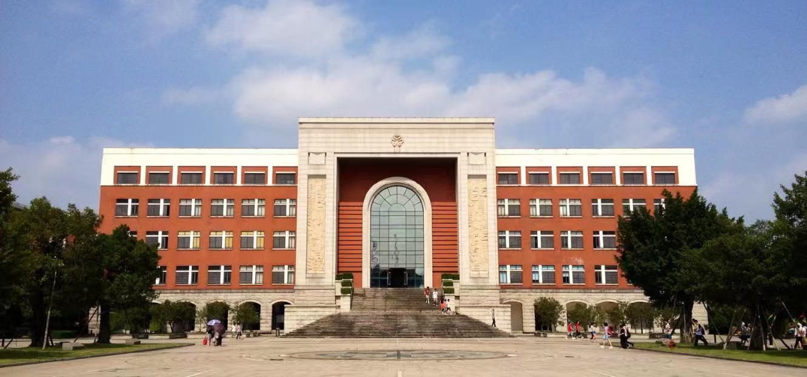
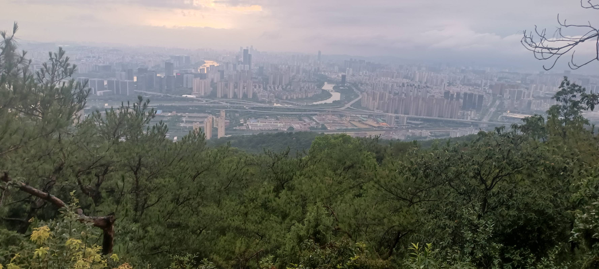
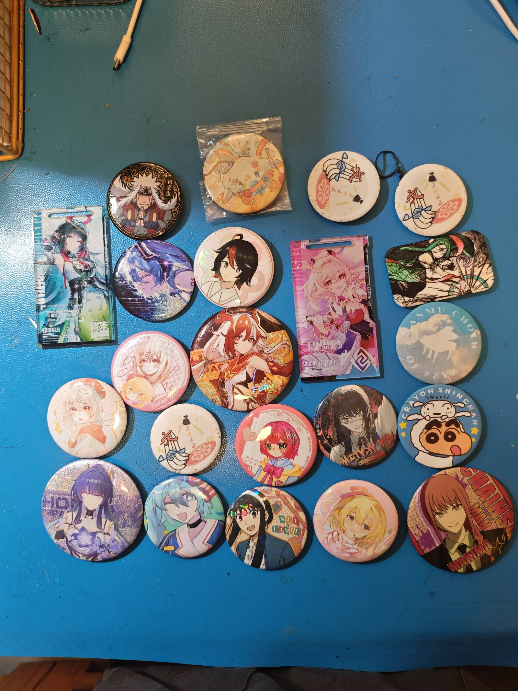
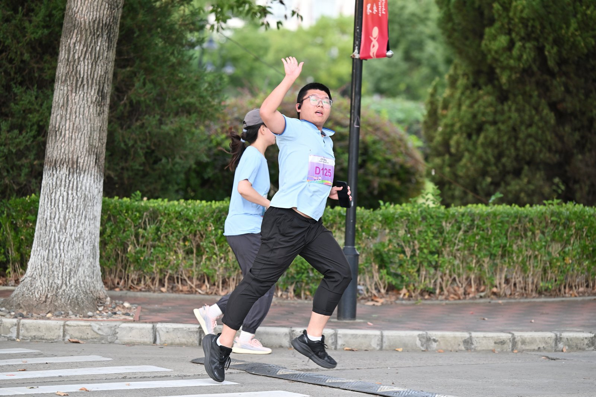
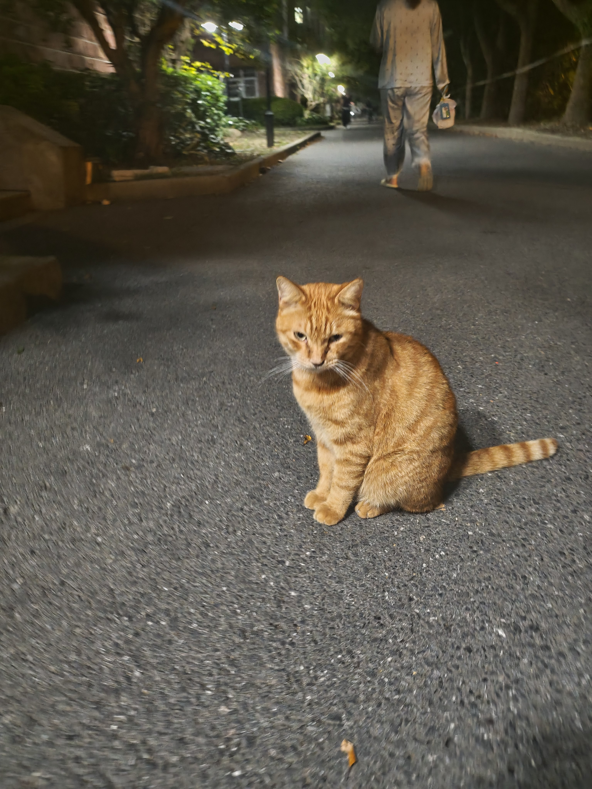
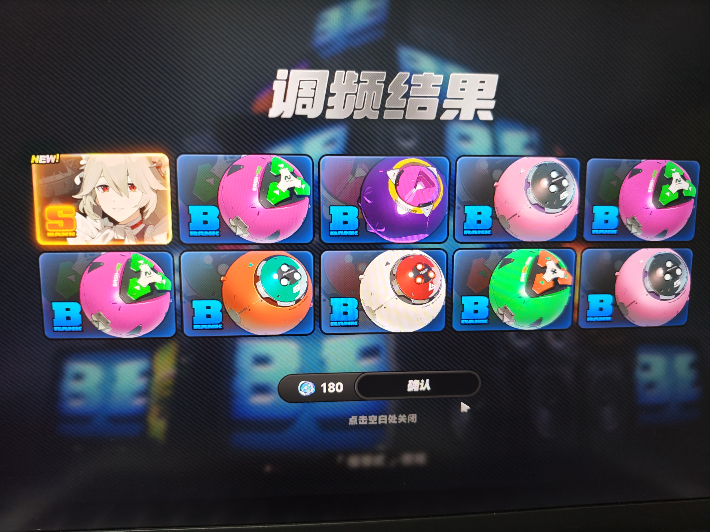

Python 程序设计
第一门真正意义的语言。从爬虫小脚本到数据清洗、建模，几乎贯穿全部专业课。
入门 → 主力02 / ABOUT ME
从福州到上海，一个正在把数据思维和 Web 开发拼到一起的学生。
福建福州人，福州一中毕业后考入上海外国语大学，现在读 数据科学与大数据技术专业。
中学时我第一次体会到「让程序按自己的想法跑起来」的快感，从此从写小脚本一路走到数据科学。 这座网站是我第一次用 HTML 与 CSS 认真搭起来的东西，也是我的 Web 开发练习本—— 每一页的背景、字体和动画都不太一样，就是想看看纯前端能玩出多少花样。
闽江边的城市，也是我审美里「旧」与「绿」的来源。
在那里第一次接触编程，也养成了拆解问题的习惯。
语言氛围很浓的学校，我却在这里整天和数据集打交道。
数学、统计、编程三条线拧成一股的地方。
从福州到上海，在终端里打印出第一行 Hello, world，从此觉得「报错」也是一种反馈。
进入数据科学与大数据技术专业，把数学、统计和编程接到了一起，开始理解数据背后的结构。
一边啃数据结构与算法，一边学 HTML / CSS，做出自己的第一个多页个人网站（就是它）。
目标是做一个真正能被别人打开、能交互的数据可视化作品，而不只是作业。
把复杂的东西拆开，再一块块装回去。 —— 我的学习方法论

在福州一中的那几年，我学会了两件事：一是把大题拆成小问，二是不怕在大家面前讲出自己的想法。 前者后来变成了写代码的能力，后者变成了做展示的底气。
性格关键词：活泼开朗、逻辑严谨、喜欢解决复杂问题，但复杂的人际来往偶尔会让我「短路」。
03 / WHAT I STUDY
数据科学与大数据技术 · 把现实问题翻译成可计算的形式，再把结果翻译回人话。
我理解的「数据科学」不是某一门课，而是三种能力的叠加： 数学与统计负责判断结论是否可靠，编程与工程负责把想法跑起来， 表达与可视化负责让别人看懂。这也是我开始学 Web 开发的原因——前端是最后一块拼图。
第一门真正意义的语言。从爬虫小脚本到数据清洗、建模，几乎贯穿全部专业课。
入门 → 主力链表、树、图与复杂度分析。它不直接产出结果，却决定代码能跑多快、能撑多大。
正在啃随机性背后的秩序。假设检验、分布与估计，是所有模型判断的地基。
地基把数据放好、取快。关系模型、索引与查询优化，是从「能跑」到「能上线」的分界线。
实用从线性回归到神经网络，学着让数据自己说话，也学着怀疑它说的话。
感兴趣把结果画成图，让结论一眼可见。也是我做这个网页的直接动力之一。
最爱看十遍不如跑一遍。每个知识点都配一个能跑起来的小例子。
把踩过的坑记下来，第二次遇到时就不再是坑，而是经验。
课程作业有终点，项目没有。做完一个再想下一个，能力才会叠加。
工具会变，把问题拆清楚的能力不会。所以我把更多时间花在「想清楚要算什么」上。
04 / MY PLACES
福州的四个坐标：一条老街、一片草场、一座园林、一座山。
这些都是我在福州反复去过的地方。它们不热门，也不算「景点」， 但每一个都能让我从代码和数据里抬起头来——老街有烟火，草场有风，园林有影子，山有高度。
闽江畔的旧商埠老街，骑楼、会馆与石板巷交错，白墙黛瓦间还留着当年茶行与钱庄的烟火气， 走走停停都是老福州的味道。
成片草甸顺着山势起伏，远处的白色风车慢慢转动。晴天时云影从草尖上掠过， 是城市近郊最开阔、也最像「深呼吸」的一片绿。

福州最早的公共园林之一，始建于清初。亭台、曲桥与荷池彼此借景， 老榕垂须，午后光影斑驳，是本地人下棋、闲坐、发呆的老地方。

福州城东的屏障。沿两千多级石阶登山，一路松涛与钟声相伴， 岩壁上满是历代摩崖题刻；登顶可俯瞰闽江与整座城。
四个地方，四种节奏：老街适合慢走，草场适合躺着，园林适合发呆，山适合爬到喘。 我把它们写在这里，也当作一份给自己的福州地图。
05 / TOOLKIT
进度条是自我评估，不是简历——写它主要是为了提醒自己还差多少。
前端这一栏会一直涨——这个网站本身就是练习记录。
Flex / Grid、关键帧、过渡。这七页用了七种不同的入场动画。
把 Python 里画好的图搬到网页上，做成能点、能筛的看板。
从取数、清洗、建模，到最后一页讲给别人听的网页报告。
06 / OFF DUTY
不写代码的时候，我在做这些事。

吧唧、亚克力立牌……给喜欢的角色安一个小家，搬宿舍时最沉的就是这一盒。

配速不快，但很少中途停下。跑步是我清理脑子里 bug 的方式。

宿舍楼下的猫认得我，我路过必蹲下来打招呼，虽然它从不回应。

《崩坏3》《绝区零》，比起抽卡我更喜欢研究机制和数值设计。
杂食型读者，偏爱科普与非虚构。读完会写点东西，哪怕只有三行。
喜欢把重复的事情交给脚本，省下的时间用来……想下一个脚本。
常驻学习区与数码区。它是我的第二课堂，也是我的摸鱼现场。
在福州长大的十八年，给了我两样东西：对「旧」的偏爱（老街、旧墙、老榕树）， 和对「绿」的依赖（草场、山、江）。所以第 04 页那四个地方，其实是我性格的来源。
07 / SAY HELLO
如果你也在学 Web 开发，或者也喜欢福州的那几个地方，欢迎聊聊。
your.email@sisu.edu.cn
github.com/your-name
bilibili.com · 常驻学习区
上海 · 上海外国语大学
谢谢你逛到最后一页 —— 这个网站的每一行 HTML 与 CSS 都是手写的。 —— 张逸琛，2026